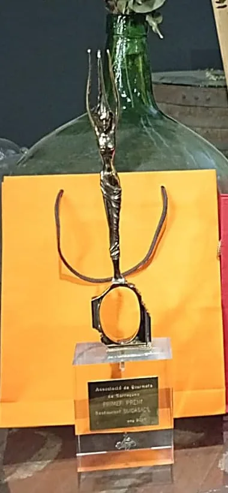

Mejor restaurante
Trofeo Gastronia
Lo recibe el restaurante con la mejor media de la temporada. En cada visita, todos los socios puntúan de forma anónima estos ocho criterios; cada año se entregan un primer y un segundo Gastronia.
- Presentación de la mesa
- Ambiente
- Servicio
- Materia prima
- Maridaje
- Elaboración y complejidad
- Postres
- Explicaciones del chef